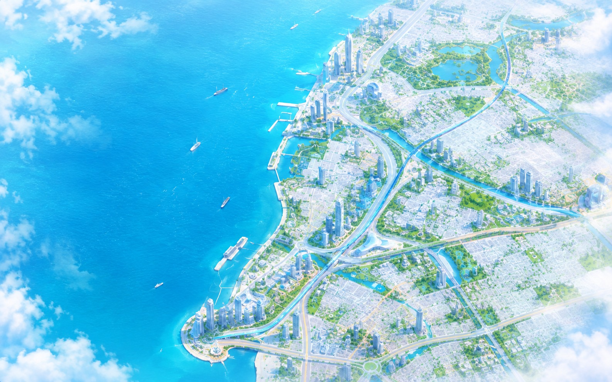

DESIGNED FOR REAL PEOPLE
Travel without the stress.
Large touch targets, step-free options, plain language and voice guidance are built into the journey itself.
One intelligent journey across autonomous buses, maglev rail, air mobility and smart roads.
RIDE combines every mode into one simple plan.

Large touch targets, step-free options, plain language and voice guidance are built into the journey itself.
Predicts delays, protects transfers and adapts your route while the city changes.
Pick a place and RIDE builds the next journey around you.
One clear experience across bus, rail, air and smart roads — designed to keep the important thing visible: your next step.
Updated just now · 18 min · 12.8 km · 2 transfers
Traffic is rising on the coastal corridor. This plan saves about 7 minutes and keeps your transfer protected.
10:45 AM arrival · 32 min remaining · 12.4 km
We'll let you know when it's time to prepare for your transfer.